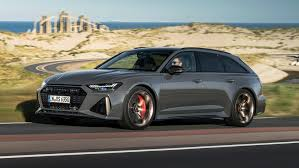
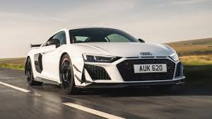
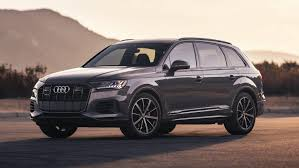

Ավտոմեքենաներ
Audi RS-6

Նախորդ սերնդի նման, նոր RS6-ն աշխատում է 4.0 լիտրանոց TFSI բենզինային շարժիչով երկտուրբո լիցքավորմամբ, որն այժմ ուժեղանում է 48 Վ գոտու փոփոխական/մեկնարկիչ մեղմ հիբրիդային համակարգով, որը կարող է վերականգնել մինչև 16 ձիաուժ հզորություն: Հետ. (12 կՎտ): Շարժիչը նաև օգտագործում է գլան ըստ պահանջի համակարգ, որը կարող է անջատել բալոնների կեսը՝ վառելիքի տնտեսումը բարելավելու համար:
Էներգաբլոկը զարգացնում է 600 ձիաուժ հզորություն։ Հետ. (441 կՎտ; 592 ձիաուժ) 800 Ն·մ (590 lbf·ft) ոլորող մոմենտով, որը հասանելի է 2100-ից մինչև 4500 պտ/րոպում:
Մինչև 100 կմ/ժ (62 մղոն/ժ) արագացումը տևում է 3,6 վայրկյան, իսկ 200 կմ/ժ արագությունը 12 վայրկյանում: Առավելագույն արագությունը սահմանափակված է 250 կմ/ժ-ով (155 մղոն/ժ), որպես ստանդարտ փաթեթներ, որոնք հասանելի են լրացուցիչ երկու մակարդակներով. Dynamic փաթեթը թույլ է տալիս մինչև 280 կմ/ժ (174 մղոն/ժ), իսկ Dynamic plus փաթեթը տրամադրում է ավելի շատ տարածք: գլուխը - մինչև 305 կմ/ժ (190 մղոն/ժ): C8-ն առաջին RS 6 Avant-ն է՝ հիբրիդային ուժային համակարգով, որն օգտագործում է Riemen մեկնարկիչ-գեներատոր և 48 վոլտ էլեկտրական համակարգ:
Quattro համակարգը ունի 40% ուժի բաշխում առջևի առանցքի և 60% հետևի համար: Համակարգը կարող է կարգավորել էներգիայի բաշխումը մինչև 70% առջևի առանցքի և մինչև 85% հետևի առանցքի համար, եթե պահանջվի: Հարմարվողական կասեցման համակարգը 20 մմ ցածր է ստանդարտ A6-ից և կարող է մեքենան իջեցնել ևս 10 մմ բարձր արագությամբ վարելիս կամ 20 մմ-ով բարձրացնել բարձրությունը ցածր արագությամբ: Drive Select ֆունկցիան ձեռք է բերում կարգավորելի RS1 և RS2 ռեժիմներ, որոնք ակտիվանում են ղեկի վրա տեղադրված RS ռեժիմի կոճակով: Բացի շարժիչի արձագանքը և կառավարումը կարգավորելուց, նրանք նաև անհատականացված տեղեկատվություն են տրամադրում Վիրտուալ խցիկի համակարգում:
Audi R8

Նրա ակնառու բնութագրերը ցույց են տալիս, որ այն պատկանում է սպորտային ցեղատեսակի՝ հզորությունը՝ 570 ձիաուժ։ ս., առավելագույն արագությունը՝ 325 (Կուպե) կամ 323 կմ/ժ (Spyder), արագացումը 0-ից 100 կմ/ժ՝ 3,4 (Կուպե) կամ 3,5 վրկ (Spyder): Բենզինի միջին սպառումը կազմում է մինչև 13,1 լ/100 կմ, CO2 արտանետումները՝ մինչև 298 գ/կմ։
Դեռևս 2017 թվականին գերմանական ընկերությունը թողարկեց հետևի անիվներով Audi R8 V10 RWS կուպեի սահմանափակ թողարկումը։ Խմբաքանակը բաղկացած էր ընդամենը 999 միավորից։ Այժմ արտադրողը որոշել է ընդլայնել ընտանիքը R8-ի նոր տարբերակով 2020 մոդելային տարվա համար՝ V10 RWD: Հետևի քարշակով այս մեքենան հասանելի կլինի թափքի երկու ոճով՝ կուպե և ռոդսթեր:
Audi R8 RWD-ն մոդելի լիաքարշակ տարբերակներից տարբերվում է կողային «շեղբերների» գունավորմամբ. կուպեի վերին մասը ներկված է Mythos Black, ստորինը (և՛ կուպեն, և՛ ռոդսթերը) ունի՝ նույն գույնը, ինչ մարմնին: Նույն սև փայլը կարելի է տեսնել սպլիտերի, դիֆուզորի և կողային կիսաշրջազգեստների վրա: Ներկապնակը համալրվել է նոր մոխրագույն Kemora գույնով։ Ընտրովի հասանելի են լոգոն՝ պատրաստված սևով, ածխածնային մանրաթելից ներսի զարդարանք (կուպեի համար) և փայլուն սև ինտերիերի դեկոր (ռոդսթերի համար): Դարբնոցային անիվները՝ 19 դյույմ չափերով, տեղադրվում են որպես ստանդարտ 20 դյույմանոց գլանափաթեթներ;
Audi TT RS

Audi TT-ի մշակումը սկսվել է 1994 թվականի սեպտեմբերին Կալիֆորնիայի Audi Design Center-ում: TT-ն առաջին անգամ ցուցադրվել է որպես կոնցեպտ մեքենա 1995 թվականին Ֆրանկֆուրտի ավտոսրահում: Դիզայնը վստահվել է Ջեյ Մեյսին, Ֆրիմեն Թոմասին և Մարտին Սմիթին, ովքեր մշակել են ինտերիերի հաջող դիզայնը : 1-ին սերնդի TT-ի համար նախկինում չօգտագործված անխափան լազերային եռակցման հարմարեցումը հետաձգեց մեքենայի թողարկումը:
Audi TT RS Coupe (Audi TT RS Coupe) «G1» դասի լիաքարշակ կուպե է: Երրորդ սերնդի մոդելի facelift տարբերակի դեբյուտը տեղի ունեցավ 2019 թվականի փետրվարին։
Գիտեք, TT-ի բոլոր երկրպագուները առաջին հայացքից չեն կարողանա հասկանալ, որ սա իր ամենա «չար» տարբերակի՝ RS-ի թարմացված տարբերակն է։ Հետևաբար, արագ հուշում. ավելի լավ է նման մեքենային մոտենալ թիկունքից, քանի որ դրանից է, որ ամենահեշտն է ճանաչել դիմահարդարումը, իսկ ավելի կոնկրետ երկու լրացուցիչ բացվածքներից, որոնք նմանակում են օդային խողովակները հետևի բամպերի մեջ: Այնուամենայնիվ, սա թարմացման, թերևս, միակ ակնհայտ տարրն է, բացի առջևի մի փոքր ընդլայնված օդային ընդունիչներից: Հակառակ դեպքում, տարբերություններ չկան. նույն լայն ռադիատորի վանդակաճաղը, ճիշտ նույն գրիլով, նույն ծավալային արտանետվող խողովակները, դուրս ցցված հետևի սփոյլեր (ցանկության դեպքում, կարող եք պատվիրել քաշվող) և նույնիսկ 19-ից 19-ից տրամագծով անիվները: 20 դյույմն ունի նույն դիզայնը: Իսկ TT RS տարբերակը դեռ կարող է ունենալ մատրիցային լուսարձակներ և OLED հետևի լույսեր:
Audi Q7

Առավելագույն արագությունը՝ 240-250 կմ/ժ։ Բենզինի սպառումը համակցված ցիկլում՝ 10,7-11,0 լ/100 կմ (հիբրիդ՝ 1,2-1,4 լ/100 կմ) DP սպառում խառը ռեժիմում՝ 7,8–8,5 լ/100 կմ։
Audi Q7-ը ամուր, հուսալի և չափազանց ընդարձակ մեքենա է, որն առանձնանում է տպավորիչ դիզայնով, վարելու զարմանալի կատարողականությամբ, աներևակայելի հարմարավետ ինտերիերով և նորագույն տեխնոլոգիաներով, որոնք նախագծված են ձեզ անմոռանալի փորձառություն մատուցելու յուրաքանչյուր ճանապարհորդության ժամանակ:
Audi Q7-ի հզորությունն ու խարիզման շարունակվում են արտաքին տեսքում՝ արտաքին բոլոր մանրամասների հստակ, ժամանակակից դիզայնով: Թարմացված ամենագնացն առաջարկում է անհատականացման եզակի տարբերակներ. ստեղծեք ձեր սեփական ոճը մարմնի երեք բացառիկ տարբերակներով՝ Orca Black, Barrique Brown և Matador Red, որոնք համակցված են 21 և 22 դյույմանոց անիվներով, որոնք ընդգծում են մոդելի յուրահատուկ ոճն ու սպորտային բնույթը: Audi Q7-ի ինտերիերը ներդաշնակորեն համատեղում է սպորտային շքեղությունը, անգերազանցելի հարմարավետությունը և նորարար թվային տեխնոլոգիաները: Ներքին տարածքը կարող է անհատականացվել նաև ընտրովի փաթեթների լայն տեսականիով, ներառյալ արևապաշտպան պանորամային տանիքը, օդի որակի համակարգը մաքուր ներքին օդի համար և բազմագույն ուրվագծային և շրջակա լուսավորություն: